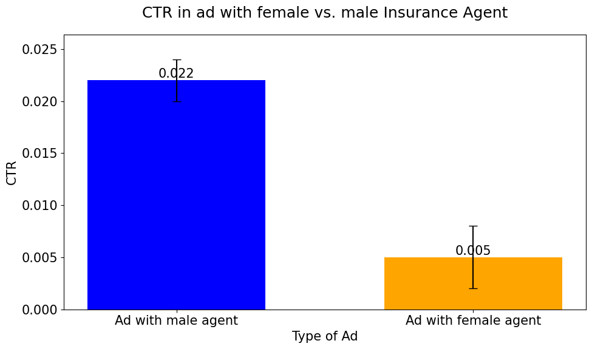
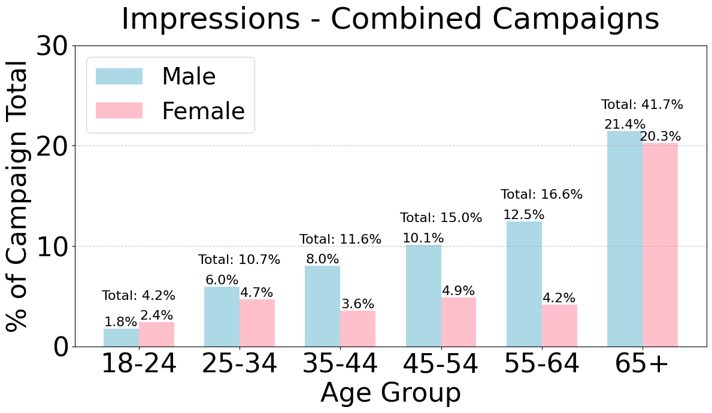
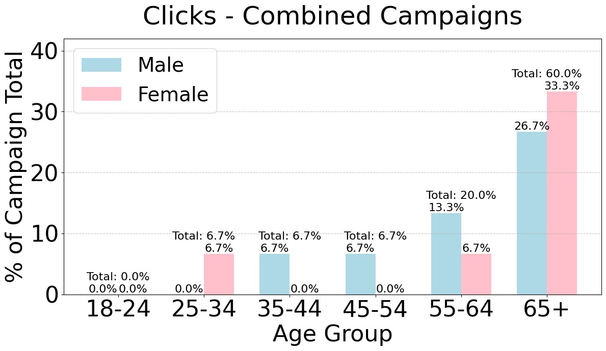
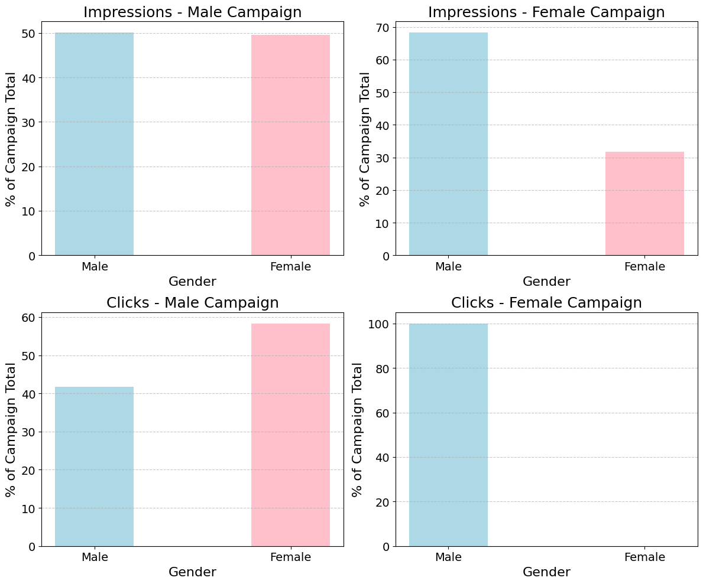

Coursework on the human side of big-data collection: cognitive limits in survey design, ethics, web scraping, the experimental method and A/B testing. Two hands-on Python projects anchor the course — a recipe web-scraper and a real marketing A/B test on ad campaigns.
From the repo README: the course studies "considerations system designers must take into account to understand the perspective of the people providing collected information — cognitive abilities and limitations that affect task design, ethics, motivation, and environmental influences," then applies those behavioral considerations to analyzing data from automated sources.
HW1 — web scraping of AllRecipes (notebook + 100-recipe results CSV). Plus HW2 / HW3 assignment write-ups.
Project 1 — health-survey statistics on the CDC BRFSS dataset. Project 2 — A/B test on Facebook insurance-ad campaigns (click data + z-tests).
Reference reading cited in the README: Salganik — Bit by Bit; Kohavi, Tang & Xu — Trustworthy Online Controlled Experiments; Spector et al. — Data Science in Context.
HW1 (HW1_code.ipynb) scrapes recipe pages from AllRecipes with requests + BeautifulSoup, throttled with random sleeps and a browser User-Agent. It collects the first 100 recipes, parsing rating, review counts, photo counts and ingredient counts, then writes HW1 results.csv.
# real excerpt — HW1_code.ipynb def get_recipe_links(page_url): response = requests.get(page_url, headers=headers) soup = BeautifulSoup(response.text, 'html.parser') links = soup.find_all('a', class_='comp mntl-card-list-items ...') ... def extract_int_with_commas(text): m = re.match(r'\d{1,3}(,\d{3})*', text) # "1,812" → 1812 return int(m.group().replace(',', '')) if m else 0
| Column | Example value |
|---|---|
| title | Simple Beef Stroganoff |
| rating | 4.4 |
| num_ratings | 1 |
| num_reviews | 812 |
| num_photos | 116 |
| num_ingredients | 6 |
Real rows from the committed CSV (e.g. row 1: "Jamie's Sweet and Easy Corn on the Cob", rating 4.9, 534 ratings, 403 reviews, 27 photos, 3 ingredients).
This project illustrates the course's "data scraping" + "ethics" units: a polite scraper (rate-limiting, UA header) collecting public structured data into a tidy dataset for analysis.
Project 1 (code project 1.ipynb) analyzes the CDC Behavioral Risk Factor Surveillance System (BRFSS) 2015 survey — an automated/administrative data source — focusing on BMI and self-reported exercise minutes. It handles missing data by imputing the three columns _BMI5, PAFREQ1_, PAFREQ2_ with a regression-based fill before computing descriptive statistics.
Mean BMI ≈ 28 sits in the "overweight" band; the right-skewed spread (max ≈ 100) reflects the long upper tail typical of self-reported BMI surveys.
# exercise minutes/week derived from survey codes — real notebook logic def get_number_of_minutes_per_week(x): if x['EXERANY2'] == 1: if (x['PAFREQ1_'] == 99000) or (x['PAFREQ2_'] == 99000): return np.NaN # 99000 = "don't know" sentinel minutes_first = (x['PAFREQ1_'] / 1000) * x['PADUR1_'] minutes_second = (x['PAFREQ2_'] / 1000) * x['PADUR2_']
Demonstrates the human-factor theme: survey codes carry sentinels ("don't know" = 99000) and missingness that a careful analyst must decode and impute rather than take at face value.
Project 2 (code project 2.ipynb) runs a real A/B test on two Facebook ad campaigns for an insurance product — one ad showing a male agent, one a female agent. Each impression is expanded to a binary click row, and a hand-written two-proportion z-test compares click-through rates. clicks_data.csv (1,124 rows) records gender × click for the analysis.
| Campaign | CTR | Clicks / impressions |
|---|---|---|
| New-traffic (male agent) | 2.29% | 12 / 525 |
| Test variant (female agent) | 0.50% | — / — |
The ad with the male insurance agent drove a significantly higher click-through rate. Overall CTR across all impressions was 0.0133 (1.33%), with 15 total clicks over 1,124 impressions.
# real excerpt — code project 2.ipynb def perform_campaign_ztest(df, campaign_a_name, campaign_b_name): # pooled proportion, manual z-statistic — no scipy shortcut p_pool = (clicks_a + clicks_b) / (n_a + n_b) se = np.sqrt(p_pool * (1 - p_pool) * (1/n_a + 1/n_b)) z = (ctr_a - ctr_b) / se p = 2 * (1 - stats.norm.cdf(abs(z)))




A textbook controlled experiment from the course: a single varied factor (agent gender in the creative), a binary success metric (click), and a significance test — exactly the A/B-testing unit applied to live marketing data.
The same hand-written z-test, running in your browser. The defaults reproduce the notebook's headline (12/525 vs 1/200). Edit any field to see how the verdict changes.